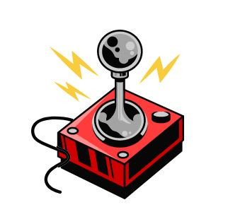

Project Technology/Topic Proposal
Due Date: As Advised via Canvas
Team name: Group 0415
Team Coordinator/Leader: Carl Ylanan
Chosen Technology/Topic |
Name |
|
| Topic-name |
Skills learnt through digital simulations/games and how they can be useful in daily life. |
Please briefly describe your topic, its relevance and importance and why you have chosen it
Topic Description |
Description and why it is important |
|
| Topic-description |
The topic of Digital Simulation and Digital Gaming was selected due to the age of time that we live in. Currently, the world is undergoing rapid technological advancements, and those technologies have begun to be used in other aspects of society, such as the education sector. From this, we have deemed it relevant as the topic dives into the different
levels of how technology is being used in this scene and how it can affect the education of students. |
Confirmed Team Member Details |
Last Name |
First Name |
Student ID |
Team Member 1 |
Ylanan |
Carl |
22169687 |
Team Member 2 |
Danao |
Jamil |
13829227 |
Team Member 3 |
Xu |
Zongyi |
19063974 |
Please outline your team members roles and responsibilities for activities they will undertake (up to four each are allowed for, but fewer is fine too)
Team Member Roles |
Role/Activity Name |
Role/Activity Name |
Role/Activity Name |
Role/Activity Name |
Team Member 1 |
Researcher(Technology/Topic & Opportunities) |
PowerPoint designer |
Documenter |
Team Leader |
Team Member 2 |
Researcher(General) |
Website Editor |
Proofreader |
|
Team Member 3 |
Researcher(Risk/Choices) |
PowerPoint designer |
Documenter |
|
Portfolio Elements |
Portfolio |
Communication Plan |
Artefact Management Plan |
Meeting Minutes |
|
| Repository and Templates Set up |
Yes/No |
Yes/No |
Yes/No |
Yes/No |
Link to your Team Repository:
0415group.github.io [Group 0415]
TA name: Kun Zhao, Date Proposal Approved: 11/05/2023,
Created on 10 May 2023
by Jamil Danao.